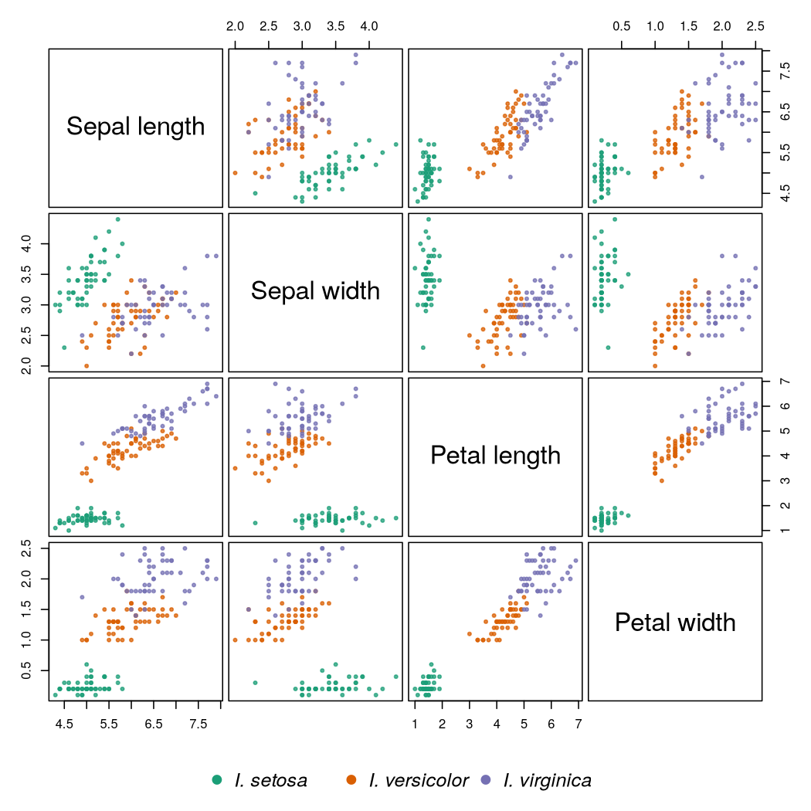

Slides in mepml
A small deck that shows what a slide can hold
Jordan Schupbach
Slides in mepml
Any mepml can go on a slide. The slide's first heading is its title.
- Open with
\slide(on a line of its own - Close with
)on a line of its own - Everything in between is ordinary mepml
2
Inline formatting
- Bold, italic, underlined and highlighted text
- Monospaced,
verbatim, superscript and subscript - Coloured text and larger text
- Links such as the mepml help
3
Lists
- Numbered items
- Nest as usual
- with bullets underneath
- as deep as you need
- Task lists work
- and so do open tasks
4
Maths
The linear discriminant maximises the ratio of between-group to within-group scatter:
\[J(w) = \frac{w^\top S_B\, w}{w^\top S_W\, w}\]
Fisher's criterion
Inline maths works too: \(\Lambda = |W| / |W + B|\).
5
A table
| Species | Petal length | Petal width |
|---|---|---|
| setosa | 1.46 | 0.25 |
| versicolor | 4.26 | 1.33 |
| virginica | 5.55 | 2.03 |
6
A figure

7
Code and its results
xs = [1, 2, 3, 4, 5]
print("mean:", sum(xs) / len(xs))
print("squares:", [x * x for x in xs])mean: 3.0 squares: [1, 4, 9, 16, 25]
Run the block with C-c C-c. Its results are written under it, on the slide.
8
Callouts
NOTE A callout reads the same on a slide as it does anywhere else.
TIP Fold a slide like any other block, or jump between slides from the outline.
9
Other spellings
This slide opens with \slide{ and closes with }.
10
This slide uses @slide{ and has no heading, so it has no title either.
11